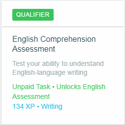

Bezahlte Aufgaben

Klicken Sie auf die Bilder für weitere Informationen.
Um Probleme aufgrund der Unkenntnis der Spare5-Regeln zu vermeiden, möchten wir erklären, was unserer Meinung nach das wichtigste ist, was in den Bedingungen dieser Plattform erwähnt wird; Wenn Sie mehr über die Bedingungen des Dienstes von Spare5 erfahren möchten, können Sie diesen unter folgendem Link erreichen: Allgemeine Geschäftsbedingungen.

Unter den wichtigsten Problemen in den Bedingungen von Spare5 ist die Einschränkung, dass Sie nur ein einzelnes Konto erstellen können. Außerdem wird erwähnt, dass Sie nicht mehr als ein Konto verwenden können und dass keine andere Person als Sie Aufgaben ausführen können, die Ihnen zugewiesen.

Ein anderer Aspekt, der sich auf die Service-Bedingungen von Spare5 bezieht, ist Performance-Zahlungen für Aufgaben, bei denen Sie erwähnen, dass wenn Sie eine Aufgabe sehr gering ausführen oder wenn Sie eine Aufgabe unvollständig lassen, wenn Sie sie mit unzureichender Qualität ausführen oder Wenn Sie sonst gegen die Richtlinien der Community verstoßen, werden Sie diese Aufgabe nicht bezahlen und was Sie in dieser Aufgabe getan haben, werden Sie nicht mit der entsprechenden Zahlung belohnt. Es wird auch erwähnt, dass Spare5 die Transaktionskosten für PayPal nicht ausführt, obwohl in diesem Fall dieses Problem nicht wichtiger ist, da PayPal für diese Transaktionen keine Provision berechnet.

Es wird auch darauf hingewiesen, dass im Falle einer Klage gegen Spare5, die Sie installieren, die Kosten für Anwälte, Vertreter, Verluste, Schäden, Urteile und sonstige Verfahren, die in dieser Situation erforderlich sein können, zu tragen sind, Grundlage einer der folgenden:

Spare5 kann Sie warnen, vorübergehend oder dauerhaft Ihr Konto oder eine Aufgabe auszusetzen, wenn Sie eines der folgenden:

Die gerade beobachteten Aufgaben sind in der Regel die Aufgaben, die Sie zu Beginn des Kurses erhalten. Sie erklären, wie Sie einige Aufgaben mit Lernprogrammen ausführen. Machen Sie sich jedoch keine Sorgen über diejenigen, die kein Tutorial haben. Wenn Sie jede Aufgabe starten, erhalten Sie Anweisungen dazu Sie werden bei all Ihren Aufgaben eine bessere Leistung haben und Sie werden bessere Leistungen erhalten, wenn Sie Erfahrungen sammeln und klarstellen, dass ein erheblicher Prozentsatz der Aufgaben in der Sprache Ihres Landes übersetzt wird.
Es gibt 4 Arten von Aufgaben in Spare5, dann erklären wir detailliert jede von ihnen:
Tutorials: Diese Aufgaben werden nicht vergütet, Sie können sie so oft wie Sie wollen, wenn Sie für zukünftige Aufgaben lernen möchten oder wenn Sie vergessen haben, wie man etwas erledigt, obwohl sie nicht bezahlt werden, empfehlen wir, sie am Anfang zu tun, wenn Sie nicht so viele Aufgaben erledigen müssen. Aufgaben lehren Sie, wie Sie Aufgaben erledigen, die aufgrund unserer Erfahrung häufiger auftreten und Ihnen Erfahrungspunkte geben, dh Ihnen helfen, Ihre Möglichkeiten, eine bezahlte Aufgabe zu erhalten, zu erhöhen. |
 |
 |
Ausbildung: Diese Aufgaben sind den Tutorials sehr ähnlich, viele von ihnen werden nur zum ersten Mal bezahlt und manche werden nie bezahlt, aber Sie können sie so oft tun, wie Sie Ihre Fähigkeiten verbessern möchten. |
Sortieren nach: Diese Aufgaben sind erforderlich, um bezahlte Aufgaben freizuschalten. Sie müssen sie mit 100% Genauigkeit ausführen, damit sie als genehmigt gelten. Wenn Sie den ersten Versuch nicht genehmigen, machen Sie sich keine Sorgen, Sie können es 48 Stunden später, wenn Sie es genehmigen, wird eine Aufgabe mit Zahlung entsperren zusätzlich zu Ihnen Erfahrung zu geben. |
 |
 |
Aufgaben mit Zahlung: Das sind diejenigen, die uns alle interessieren, richtig? Diese Aufgaben bringen Erfahrung, aber am wichtigsten ist, dass Ihre Spare5 Gewinne zwischen 1 und 5 Cent steigen, in den meisten Fällen sind sie sehr einfach und nehmen Sie nicht mehr als 30 Sekunden sind sie normalerweise für eine Weile und verschwinden, also sei dir bewusst. Wenn Sie die Aufgabe zum ersten Mal eingeben, geben sie Ihnen Anweisungen und sie sagen Ihnen, was Sie tun sollen und wie Sie es tun. Beachten Sie die Anweisungen, um einen hohen Prozentsatz an Erfolg und eine bessere Bezahlung zu haben. Sie werden wahrscheinlich wieder solche Hausaufgaben bekommen. |
Aus unserer Erfahrung können wir Ihnen sagen, dass je besser Sie die Aufgaben erledigen, desto mehr werden Sie kommen, da Ihre Leistung bei diesen Aufgaben von denen überprüft wird, die sie erziehen.


Spare5 hat auch ein System von Empfehlungen, das Sie in dem Moment aktivieren wird, in dem Sie insgesamt 10 USD erreicht haben, wobei Sie alle Wochen, die Sie gearbeitet haben, zählen. Sie können Ihren Empfehlungslink finden, indem Sie oben auf die Bild.

Wie Sie sehen, haben Sie ein kleines Fenster, in dem Ihr Verweis-Link angezeigt wird. Sie können ihn an Ihre Freunde senden. Wenn einer von ihnen sich registriert und in Spare5 Geld verdient, können Sie für jeden 10 Freund 2 UDS erhalten und er wird 1 USD erhalten; Dies gilt solange, bis eine dieser beiden Situationen eintritt: 180 Tage sind vergangen, seitdem sich Ihr Freund registriert hat oder Ihr Freund insgesamt 100 USD erhalten hat, wie im Fang erklärt.
Sie haben mehrere Möglichkeiten, dies mit sozialen Netzwerken wie Facebook, Google+ oder LinkedIn zu tun. Sie können sich jedoch auch registrieren, indem Sie ein Konto erstellen. Wenn Sie diese Option wählen, gelangen Sie zu einem Formular, in dem Sie Ihre E-Mail, Ihren Vornamen, Nachname und erstellen Sie Ihr Passwort.
 |
 |
Also, wenn Sie schnell, sicher und unterhaltsam Geld verdienen möchten, ist Spare5 eine großartige Option. Wir lassen den nächsten Knopf so, dass Sie sich registrieren und Geld verdienen können, wenn Sie es wünschen.
Muss ich Englisch lernen, um Hausaufgaben zu machen?
Nein, es ist nicht notwendig, Englisch zu kennen. In vielen der Aufgaben sind die Anweisungen auch in der Sprache der Vorlieben und in denen nicht, können Sie einen Online-Übersetzer verwenden, wird Spare5 Sie nicht sanktionieren, wenn Sie dies tun.
Wie lange kann ich ohne Hausaufgaben sein?
Solange Sie wollen, bestraft Spare5 nicht die Inaktivität Ihres Kontos. Sie erhalten die Zahlung natürlich nicht, wenn Sie die ganze Woche ohne Aufgaben arbeiten, aber Sie werden nicht dafür bestraft.
Gibt es ein Zeitlimit für die Ausführung einer Aufgabe?
Nein, in Spare5 können Sie alles nehmen, was Sie brauchen, auch wenn es sehr lange dauert. Es erscheint folgende Meldung:

Wie Sie sehen, sagt uns die Nachricht, dass die Sitzung in 60 Sekunden abläuft, dh in einer Minute werden Sie schreiben, um eine neue Aufgabe zu wählen, und wir können nicht weiter mit dem Programm fortfahren, sondern indem Sie auf
Ist die einzige Möglichkeit, die Zahlung zu erhalten, per PayPal?
Ja, Spare5 sendet die Zahlung nur über PayPal und Sie müssen Ihr Konto verknüpfen, um Zahlungen zu erhalten. Andernfalls erhalten Sie keine Zahlung, Sie verlieren nicht das, was Sie verdient haben, aber bis Sie Ihr PayPal-Konto nicht verknüpfen, was Sie erreicht haben, ist es auch erwähnenswert, dass es nicht notwendig ist, in PayPal ein bestätigtes Konto zu haben.
Wie viele Aufgaben kann ich pro Tag tun?
Alles, was Sie wollen, in Spare5 gibt es keine Begrenzung für die Aufgaben, die Sie erledigen können, und nichts passiert, wenn Sie keine Hausaufgaben machen, nichts passiert, wenn Sie ein paar oder viele tun, es hängt alles davon ab, wie sehr Ihnen gefällt, was Sie tun und Sie haben die Aufgabe, die Sie gerade erledigt haben, noch nicht fertig gestellt, Sie können problemlos gehen, Sie werden nicht dafür bestraft, ja, wenn Sie die Aufgabe erneut eingeben, müssen Sie von vorn beginnen, der Fortschritt wird nicht gespeichert.
Ich habe kein PayPal-Konto
Kein Problem, als erstes müssen Sie auf die PayPal-Seite gehen, den Link für Ihre eigene Sicherheit nicht bereitstellen. Dort finden Sie oben die folgenden Optionen:
Hier, nach einem Klick auf

Später werden Sie nach Geschlecht und Geschmack gefragt und danach nach Ihren persönlichen Daten. Sie werden Sie dann fragen, ob Sie Ihre Bankkarte zuordnen möchten, die Sie verschieben können, wenn Sie dies wünschen, indem Sie auf